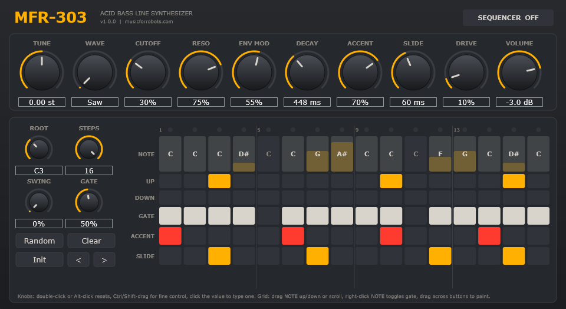

MFR-303
Acid bass line synthesizer.
- VST3 + Standalone
- Windows 64-bit
- Open source (AGPLv3)
A monophonic bass synth in the spirit of the 303. It has the squelching resonant filter, the accent and slide that make acid lines move, and a step sequencer that syncs to your DAW.
- Diode-ladder style filter, oversampled. Resonance thins the low end the way the original does.
- Accent and slide. Accents stack up when they come in a row.
- 16-step sequencer with note, octave, gate, accent and slide per step, plus swing and a randomizer. Or play it from your piano roll.
- Drive for when clean isn't the point.